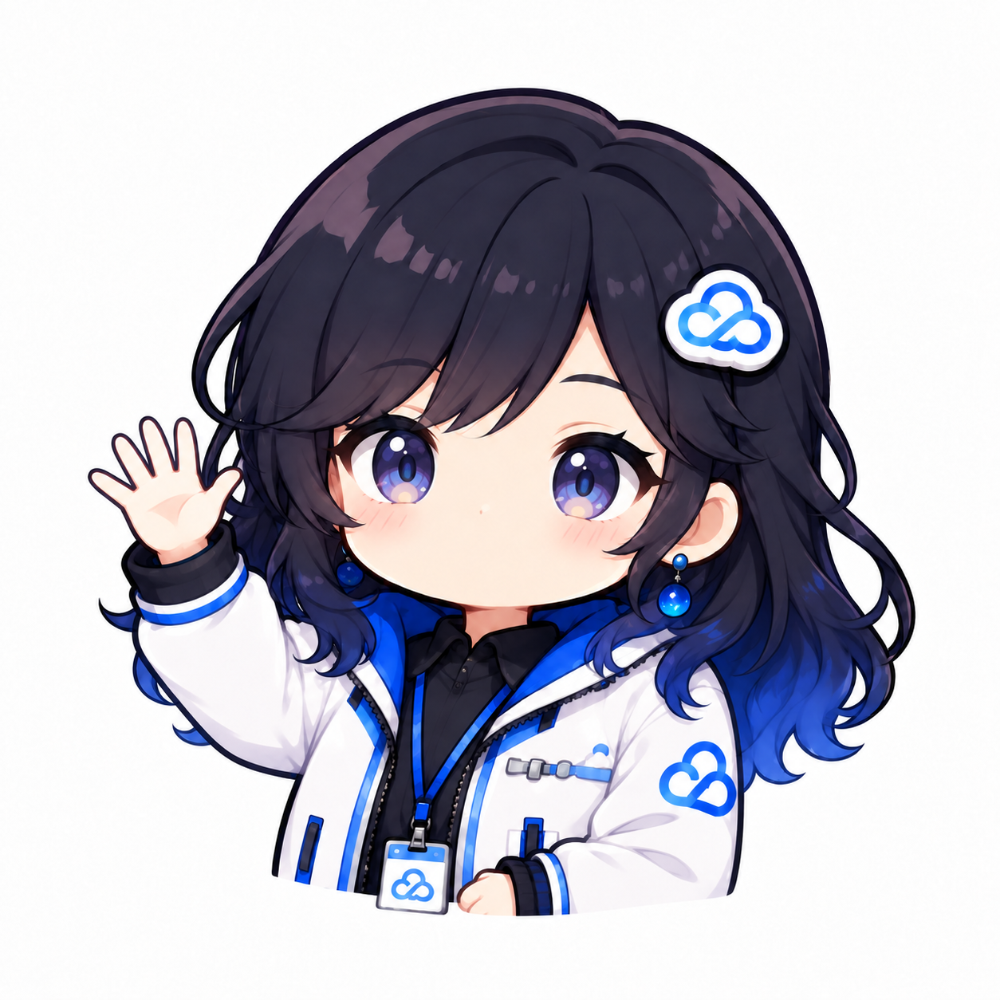
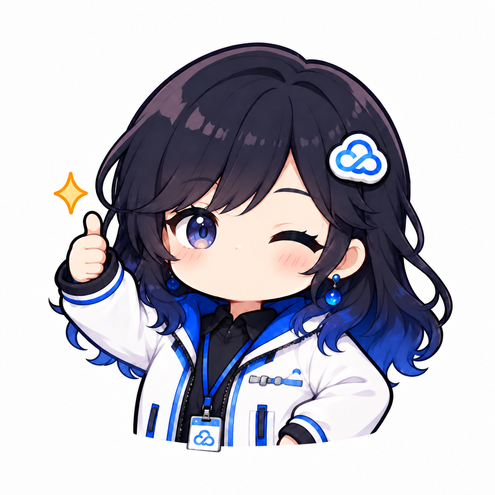
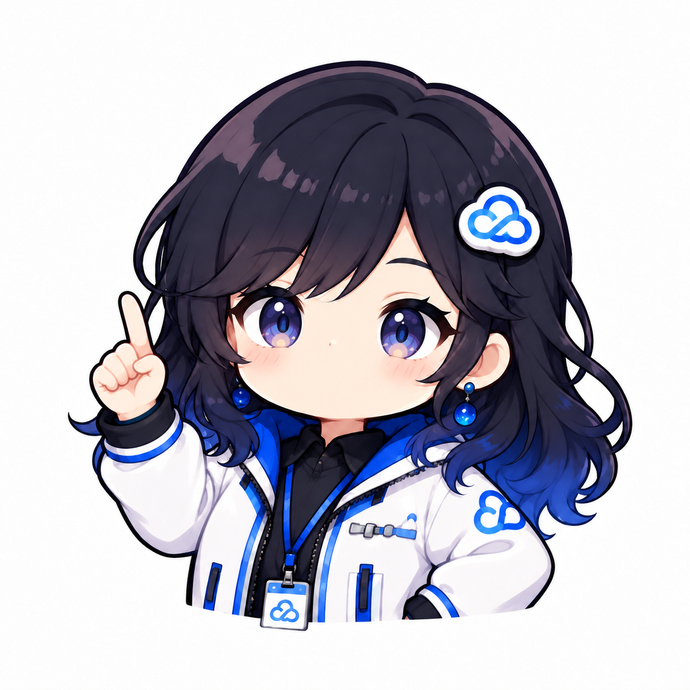

把互动留在现场
主持人直接开口提问，小云当场回答；说到一半有追问，也能接续对话。
主持人：“能不能举个例子？”
小云：“可以，我们就拿现在的直播间来说……”
小云：“可以，我们就拿现在的直播间来说……”
小云能和主持人实时语音对话，也能开口回应观众弹幕。她可以讲产品、聊活动、介绍演示内容；表情和嘴型跟着声音变化，让直播间多一位能互动的伙伴。

AI 不再只是后台写文案的工具。它以声音和形象出现在镜头里，回应主持人和观众，让一场直播既能持续表达，也能接住现场变化。
主持人直接开口提问，小云当场回答；说到一半有追问，也能接续对话。
小云在完整的口播回合之间阅读新弹幕，抓共同话题，也能对某位观众具体回应。
固定口播、产品素材或网页演示稿都能成为直播内容；场控可以调整互动密度和播报节奏。
切换下面的直播片段，点选主持人提问、观众弹幕或场控动作，感受虚拟形象怎样参与现场。本区是静态交互示意，真实直播由已配置的 Agent 实时生成回复。
完整讲完一轮后再看弹幕，讲解与互动交替进行；不会在一句话中间打断。
小云从人机语音对话起步，再接入观众弹幕、直播内容与场控。网页演示稿只是其中一种可选内容来源。
浏览器采集麦克风，服务端识别语音，Agent 生成回答并播报；主持人可以追问或打断。
小云随对话状态切换表情，按实际播放的声音控制嘴部开合；绿幕画面可用 OBS 合成。
读取这段时间的新文字弹幕，先理解讨论全貌，再选择群体回应或点名回答。
可使用文字素材、固定口播或 HTML 演示页；一页内容能分多轮讲，不用一句话就翻页。
长回复按完整句子进入音频队列，播放当前段时预合成后续段，减少口播间停顿。
固定口播、弹幕频率、翻页和停止都由场控操作；直播节奏随现场调整。
从有人主持的直播开始，小云可以担任嘉宾、助播或虚拟讲解员。先让对话自然，再按需要加入内容和弹幕。
主持人像邀请嘉宾一样 cue 小云。她介绍自己、解释产品、接住追问，还能在主持人转场时补上下一句。

观众边看边问，小云总结共同问题，也能叫出某位观众的名字回应；讲解与互动轮流进行。

产品资料、活动口播或 HTML 演示页成为她的参考内容。她会分段展开，并在观众提问后回到主线。
从角色和声音开始，先跑通主持人与 AI 的对话，再连接观众弹幕、内容来源和直播画面。每一步都可以独立试播。
本页为静态示意，不连接真实直播，也不读取观众信息。实际场控工作台需要授权登录。
设置身份、语气和直播目标，选好声音与形象；先用浏览器麦克风试一次真人与 AI 的语音对话。
用 OBS 收集小云绿幕画面，与主持人、商品或活动画面合成；确认声音、嘴型和切换效果。
在场控 Mac 登录视频号直播后台接收文字弹幕；按直播需要加入固定口播、文本资料或 HTML 演示页。
场控启动 AI 直播，调整弹幕回应频率；主持人随时能开口追问，场控也能播放固定口播或停止。
先体验人机对话，再决定要加入哪些内容与互动能力。
项目负责人提供的运营汇总，截至 2026 年 10 月 23 日。累计直播超过 30 小时；以下为首场约 80 分钟直播的数据。
这些数字用于说明实际使用情况，不等同于 AI 带来的增量或效率提升。页面内互动为示意，试听为已有录音；授权控制台提供实时语音与直播能力。
1分47秒 · 小云配音的功能与方案说明，包含交互场景示意。